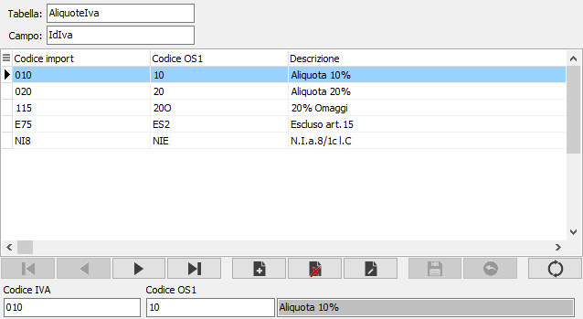

Associazione codici
La tabella consente di associare i dati provenienti da altre applicazioni a quelli presenti in OS1. Non tutti i campi presenti nei modelli di importazione consentono l'associazione dei codici, ma solo quelli per cui è specificata la prestazione all'interno del file di configurazione del modello. Utilizzando la tabella associazioni è possibile indicare per i valori presenti nei dati del file di importazione ed il codice già presente nelle tabelle di OS1.
Sono attivi i tasti Stampa ed Anteprima sulla toolbar principale per effettuare la stampa dei dati presenti.

VALORE DEL FILE DI IMPORT: indicare il valore presente nei dati contenuti nel file di import da sostituire. L'etichetta del campo varia in relazione alla tabella Associazione codici.
CODICE OS1: indicare il valore presente nei dati di OS1 da sostituire al valore proveniente dal file di import. Il collegamento con la tabella di OS1 varia in relazione alla tabella Associazione codici.